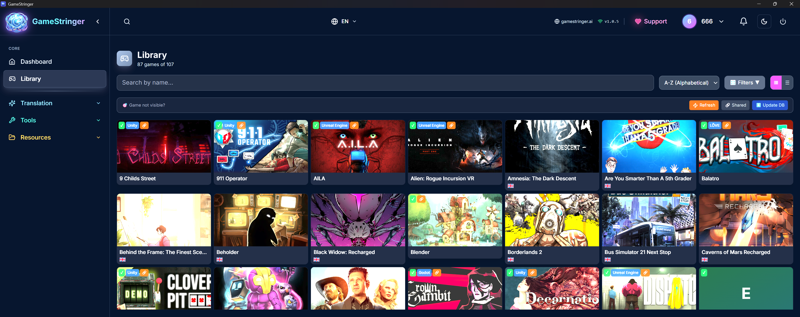
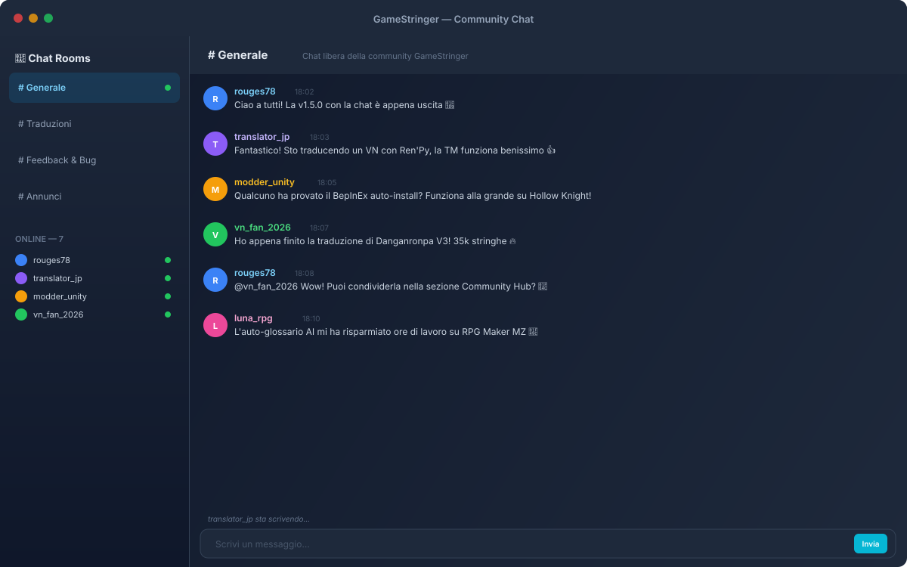

System Status: Optimal
GameStringer
The ultimate open-source localization suite powered by Neural AI.
The ultimate open-source localization suite powered by Neural AI.
Un'interfaccia intuitiva progettata per traduttori professionisti e appassionati. Dark theme, responsive, con ogni strumento a portata di click.




Un ecosistema completo di strumenti AI progettati specificamente per la localizzazione di videogiochi.
Un click: traduce, salva in TM, estrae glossario, crea file revisione e genera PAK/patch. Unity, Unreal, Godot, RPG Maker, Ren'Py.
Punteggio qualita 0-100 per ogni riga tradotta. ContentTypeBadge (UI/Dialogo/Narrativa/Sistema). Anteprima qualita in tempo reale durante il batch.
Glossario estratto automaticamente dall'AI. Translation Memory persistente con backend Rust. Import/export TMX standard.
Tutorial guidato con overlay visivo, highlight elementi UI, navigazione step-by-step. Multilingua (IT/EN/ES/FR/DE).
Unity (BepInEx+XUnity), Unreal (UnrealLocres), Godot, RPG Maker MV/MZ/VX/Ace, Ren'Py, GameMaker, Telltale, Wolf RPG, Kirikiri, Danganronpa WAD.
GPT-4, Claude, Gemini, DeepSeek, Groq, Mistral, DeepL, Cohere, Together, Fireworks, OpenRouter, Cerebras. Locali: Ollama, LM Studio, TranslateGemma, HY-MT, Qwen 3.
L'AI analizza genere, personaggi, tono e contesto. Gestisce variabili {0}, tag <color>, formattazione. Supporto RTL automatico.
Traduci sottotitoli SRT, VTT, ASS/SSA. Preview in tempo reale, validazione QA, overlay OBS per streaming.
8+ console retro: NES, SNES, GB, GBA, Genesis, PSX. Table Files (.TBL), iniezione font, estrazione testo da ROM.
Tesseract OCR + AI per estrarre testo da screenshot di giochi retro, DOS, console emulate. Font pixelati supportati.
Clona voci con AI (ElevenLabs, OpenAI TTS). Preset: narratore, eroe, cattivo, bambino, robot.
Chat in tempo reale con altri traduttori via Supabase Realtime. Auto-login tramite profilo GameStringer. 4 stanze + stanze personalizzate. Presenza online.
Supporto nativo per i principali engine. GameStringer rileva automaticamente l'engine e configura il metodo ottimale.
Opzioni gratuite, locali per privacy totale, o cloud per massima qualita. Ogni provider e ottimizzato per traduzioni gaming.
Ogni strumento necessario per tradurre qualsiasi tipo di gioco, dalla visual novel al AAA.
Batch translation con TM, fuzzy matching e cache. Quality Badges 0-100 per riga.
Traduce + TM + glossario + revisione + patch in un singolo click per 11 engine.
Clona voci con ElevenLabs e OpenAI TTS. 6+ preset voce.
Sottotitoli spaziali 3D per giochi VR con auto-detect headset.
QA automatico: placeholder, numeri, tag HTML, lunghezza.
Raccogli feedback giocatori con rating 5 stelle e categorie.
Tesseract + AI per estrarre testo da screenshot e texture UI.
Estrai contesto dal gameplay per traduzioni piu accurate.
Ripara tag HTML rotti, variabili corrotte, encoding issues.
Overlay real-time per streaming. OBS WebSocket, export SRT/VTT.
Migrazione completa a Tauri v2, presenza unificata in tempo reale, notifiche native, Bethesda & CRI engine, Network Resilience e molto altro.
Migrazione completa da Tauri v1 a Tauri v2: nuove API plugin, capabilities system, CSP strict, auto-updater v2, WebView2 su Windows. Build native per Windows, macOS e Linux.
Sistema di presenza unificato con Supabase Realtime + DB fallback. Heartbeat ogni 30s, auto-away quando la finestra perde focus, auto-online al ritorno. Indicatore live nel widget Community Chat.
Notifiche native del sistema operativo per 9 tipi di eventi: messaggi chat, traduzioni completate, errori, aggiornamenti, amici online, novità. Quiet hours configurabili, preferenze per tipo.
Nuovo patcher Bethesda: Skyrim LE/SE/AE, Fallout 3/NV/4, Oblivion, Starfield — BSA v103-105 + BA2 GNRL/DX10 + ESP/ESM. Nuovo patcher CRI Middleware: Persona, Yakuza, Tales of, Dragon Ball — CPK + CRILAYLA + MSG/BMD.
Monitor di rete con status bar (verde/giallo/rosso), retry con backoff esponenziale, coda offline. Error boundaries auto-recovery su ogni widget (5s, max 3 retry). Crash recovery globale.
Profili vocali per personaggio: estrazione automatica dello stile dal dialogo, 16 toni, 5 livelli di formalità, prompt injection per traduzioni coerenti. Infrastruttura fine-tuning con dataset da correzioni umane (4 formati, Ollama).
Live Overlay, Hub Marketplace, AI Dubbing Pipeline, Plugin System, Translation Memory Network e Security Hardening.
Traduzione in tempo reale con overlay OCR trasparente. Hotkey Ctrl+Alt+O, multi-engine OCR (Tesseract/OneOCR/PaddleOCR), diff detection, cache traduzioni. Impatto minimo sulle prestazioni.
Marketplace comunitario con pacchetti di traduzione. Profili utente, sistema reputazione, workflow stato (draft → published → verified → featured). Installazione a un clic.
Pipeline completa in 7 step: scan audio → Whisper STT → traduzione AI → TTS (OpenAI/ElevenLabs/Azure) → duration matching → patching → lip sync + sottotitoli.
Patcher estensibili dalla community con interfaccia PatcherPlugin. Ciclo completo: detect → extract → patch → verify → restore. Template generator, sandbox JavaScript, distribuiti come .gsplugin.
Condivisione federata delle traduzioni. Contribuzione automatica delle traduzioni di alta qualità (confidence > 0.8), hash privacy-first, integrato nel pipeline translateWithFallback().
CSP rinforzata, rimosso unsafe-eval, fix XSS, crittografia AES-256-GCM per API key, protezione CSRF, validazione Zod su 4 route API, rate limiting globale. 42/42 route con withErrorHandler.
Scegli dalla libreria Steam, Epic, GOG o aggiungi manualmente. Auto-detect engine e file traducibili.
Scegli provider AI, lingua target, glossario e contesto. L'AI adatta il tono al genere del gioco.
Premi un bottone: traduzioni iniettate automaticamente. Quality Badge per ogni riga. Backup incluso.
Progettato per diversi tipi di utenti con esigenze specifiche.
Vuoi giocare quel gioco giapponese mai tradotto? GameStringer crea traduzioni fan di qualita professionale.
Fai parte di un gruppo di traduzione? GameStringer accelera il lavoro con Translation Memory condivisa e glossari.
Budget limitato? Traduci il tuo gioco in 20+ lingue senza assumere traduttori professionisti.
Modello basato sulla fiducia: traduci gratis fino a 500 stringhe, poi donazione di qualsiasi importo per sbloccare traduzioni illimitate.
Le prime 500 stringhe sono completamente gratuite. Nessun account, nessuna carta, nessun limite di tempo.
Dopo 500 stringhe, anche solo 1€ sblocca traduzioni illimitate per sempre. Honor system basato sulla fiducia.
Una volta sbloccato, traduci quante stringhe vuoi. Nessun abbonamento, nessun rinnovo, nessun trucco.
Open source (Source-Available License) con modello "freemium gentile": 500 stringhe gratuite, poi supporto libero (anche 1€) per illimitato. L'unico costo extra e per le API AI cloud a pagamento, ma puoi usare Ollama gratis in locale.
Completamente gratis: TranslateGemma (Google, 55 lingue), HY-MT1.5 (Tencent, ~1GB), Ollama (qualsiasi modello locale), LM Studio, Qwen 3 (CJK). Free tier cloud: Gemini (15 RPM), Groq (14.4K req/day), Mistral, DeepL (500K char/mese), MyMemory, Lingva, Cohere, Together ($25 credit), Fireworks, OpenRouter, Cerebras, NLLB-200.
GameStringer modifica solo file di testo/localizzazione offline, non altera gameplay, non bypassa DRM e non comunica con server di gioco. Per single-player offline nessun rischio. Per online, controlla l'EULA specifico.
Installa automaticamente BepInEx + XUnity.AutoTranslator. Estrae testi, traduce con l'AI scelta, crea file traduzione. Il gioco carica le traduzioni automaticamente. Per Unity < 5.6: usa IPA 3.4.1 invece di BepInEx.
VN breve (5K): 10-30 min. RPG medio (50K): 2-6 ore. JRPG grande (200K+): 12-24 ore. Con Groq LPU: ~500 tok/s. Con Ollama locale: dipende dalla GPU.
Con AI moderne (GPT-4, Claude, Gemini) e contesto: 80-90% di qualita pro per testi standard. Quality Badges (0-100) mostrano la qualita per ogni riga. Per dialoghi complessi, consigliata revisione umana.
Si! OCR Translator estrae testo da screenshot. Retro ROM Tools supporta NES, SNES, GB, GBA, Genesis, PSX con Table Files. Puoi tradurre anche giochi senza file di testo accessibili.
Assolutamente! Contribuisci con codice, traduzioni UI, documentazione, bug report, feature request. Supporto economico via Ko-fi, GitHub Sponsors.
Scarica GameStringer gratuitamente e inizia a giocare nella tua lingua. Nessun account, nessun abbonamento.
GameStringer e sviluppato nel tempo libero. Il tuo supporto aiuta a mantenere il progetto attivo!